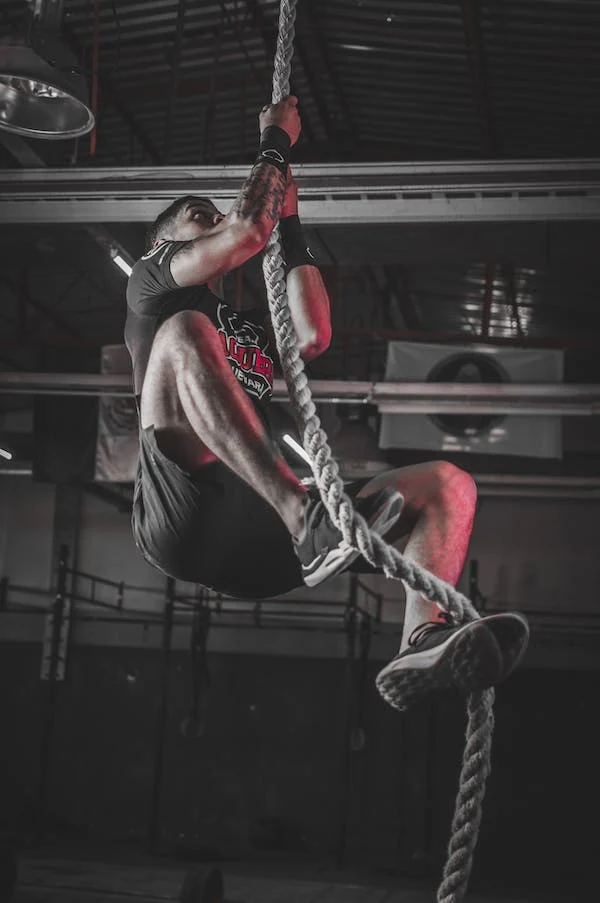
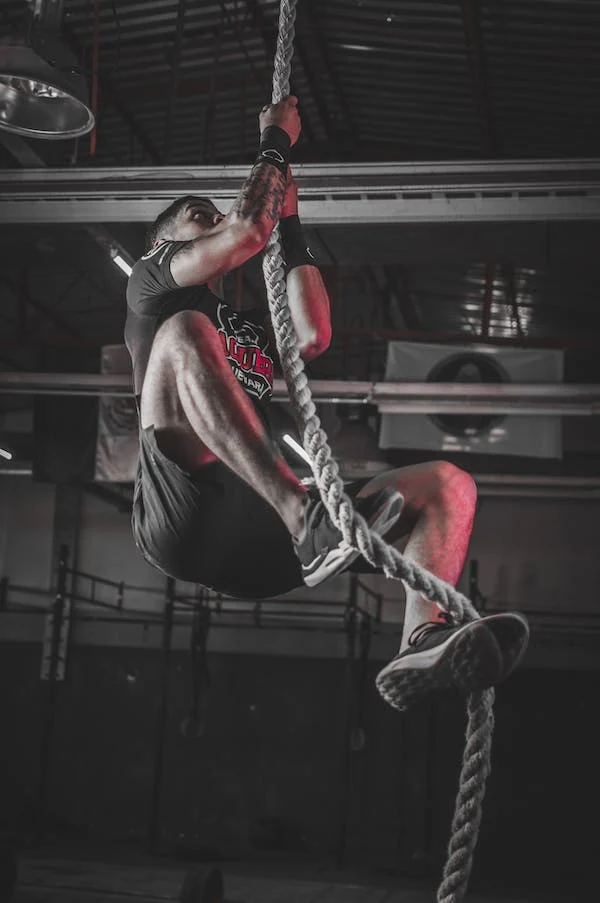

How can you start?
I am going to show you how I got started in the world of the gym. There are many paths through fitness and I am going to teach you how to choose the one you like the most and that suits you best.
I am going to show you how I got started in the world of the gym. There are many paths through fitness and I am going to teach you how to choose the one you like the most and that suits you best.
Depending on the available days you have per week, which muscle groups you should train each day of the week, taking into account the rest days in between. Especially when starting

This list is very subjective, each person prefers to do different exercises, although there are some less useful than others. Above all, I look for exercises that don't bore me and with which I can set goals
Starting a gym journey involves setting fitness goals and becoming familiar with equipment. Align objectives with weight loss, muscle gain, or overall health improvement and incorporate basic exercises targeting major muscle groups...
Consistency is essential in fitness. Craft a schedule that fits your lifestyle, incorporating enjoyable activities for adherence. Seek guidance from a fitness professional for proper form and listen to your body by including rest days. Starting in the gym is gradual, requiring patience and celebrating small victories.


 


This routine is maker for begginners, it is based on training the entire body in the same day. It is usually done when you have two or four days to dedicate to the gym. One thing you have to keep in mind when looking for a routine like this is that you do different exercises every day, that you train the largest and most common muscle groups, but with different exercises. This is so that it is not monotonous and gives different stimuli to the muscles.
This routines is similar to the full body, but instead of training the entire body, you train the upper part (chest, back, arm) one day and the lower part (legs) the next day. As the last one, this routine it is usually done in two or four days in a week, lo importante es intercalar superior con inferior
The acronym of the name of this routine means push pull leg. This routine is a little more advanced, although it is easy to find plans for this routine all over the internet. It is based on doing pushes on the first day, that is, chest, triceps and shoulder. A second day of pulling, we refer to the back and biceps. And a third full leg day, although you can divide the leg into posterior and anterior, and thus do it on two different days. For this routine you need three days, or four if you split the leg.
The name of this routine comes from being the split of the famous bodybuilder and actor Arnold Schwarzenegger. The routine is similar to the previous one, the only thing that changes is that instead of doing pulls or pushes, you do one day with the back and chest alone and another with the arms alone, that is, biceps, triceps and shoulder. And the last leg day, which as I said in PPL, you can divide it into two days.
This routine is done when you have sufficient knowledge about the exercises that you like the most and that work best for you, also when you know how to distribute them so that they suit you and are useful to you. It can be customized in the ways you want, based for example on the muscle groups that are weakest for you.